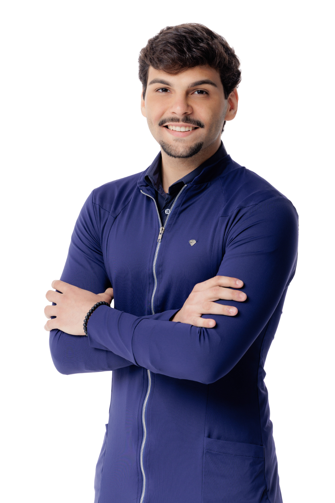
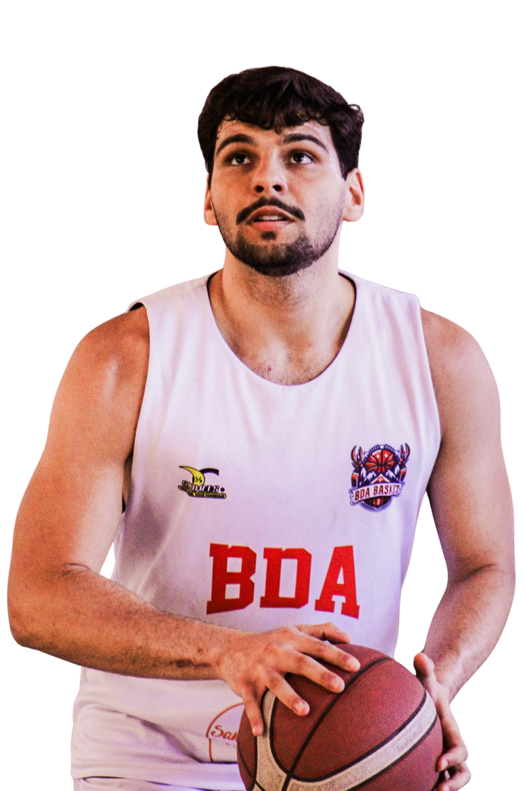
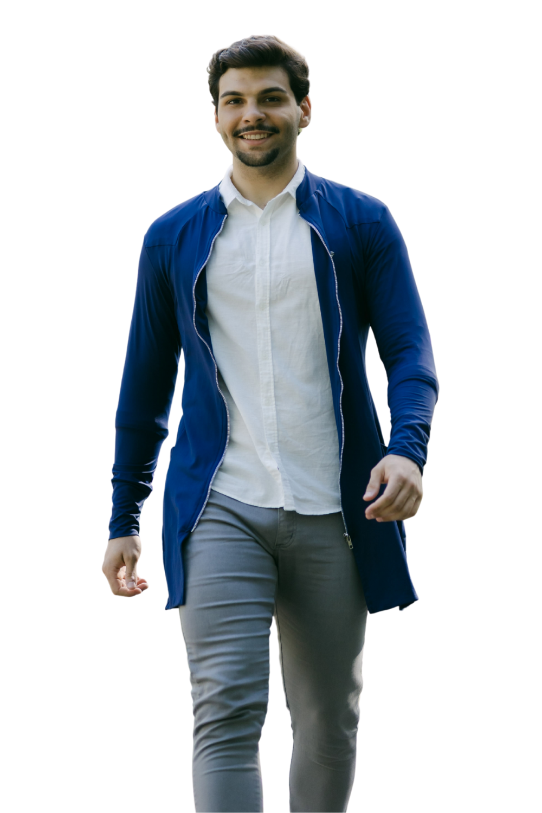
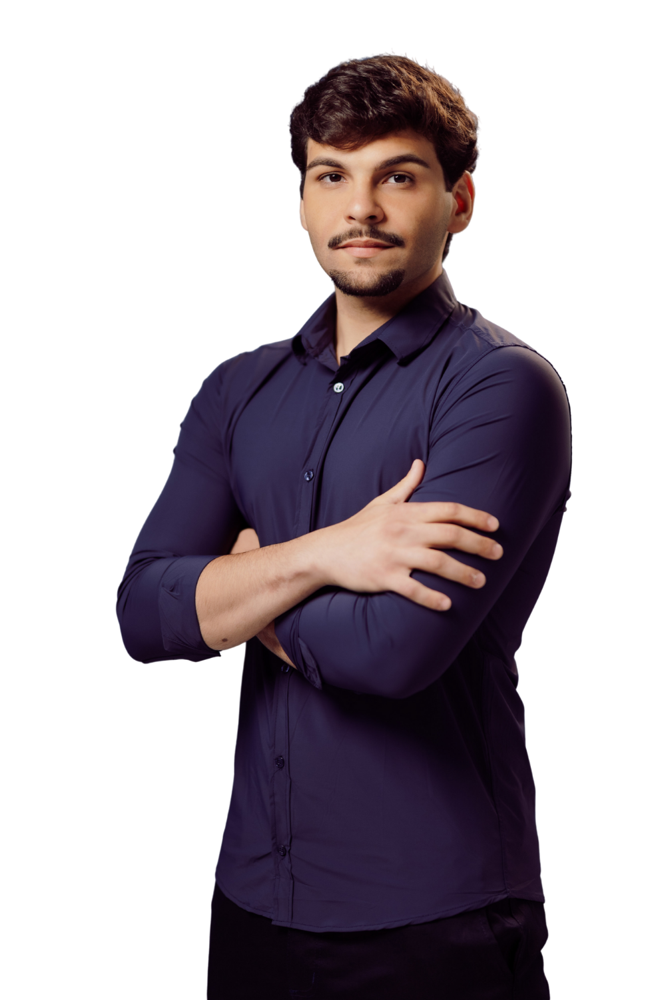

Arthur Aragão
Seu consultor nutricional
Quem sou?
Prazer, tenho 22 anos e sou nutricionista formado pela Universidade de Fortaleza.
Sou apaixonado por saúde e movimento.
Pratico esportes desde criança, mas foi o basquete que me abriu portas importantes, garantindo bolsas na escola e na faculdade.

Quem sou?
Durante a infância e adolescência, vivi a obesidade de perto, o que marcou profundamente
minha relação com a saúde. Minha história de superação é a prova de que uma alimentação
saudável e a prática de exercícios físicos são ferramentas capazes de promover uma mudança
de vida completa. A nutrição entrou na minha vida primeiro como ferramenta — e hoje é
propósito.

Esporte e abordagem
Atualmente sou praticante de jiu-jitsu, modalidade que me ensina valores essenciais como
disciplina, respeito e superação. Acredito em uma abordagem sem neura e sem extremismos,
ajudando pessoas a se sentirem melhor com o próprio corpo.

Minha missão
Minha missão é acompanhar pessoas na reconquista da sua saúde e autoestima, utilizando a
nutrição e o esporte como ferramentas para uma vida mais ativa e feliz.
Para mim, cuidar da alimentação é um processo — e não algo temporário.